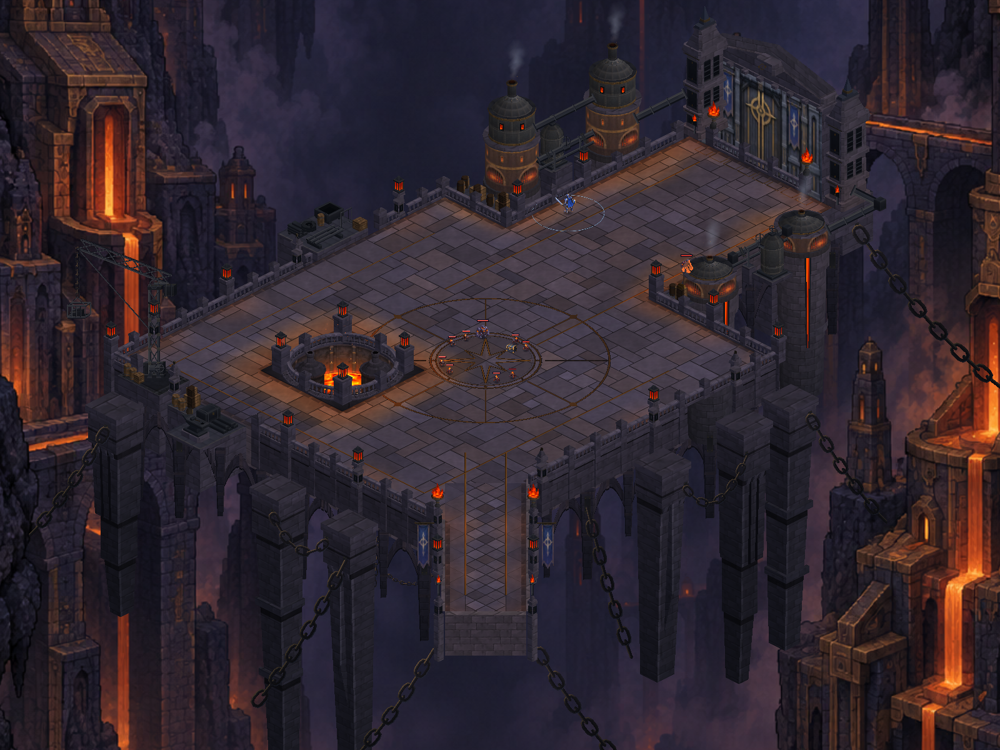
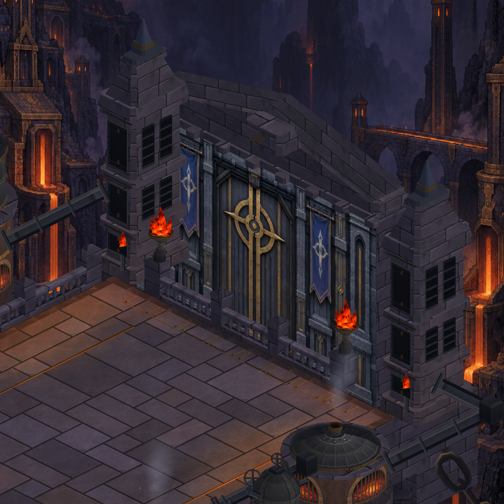
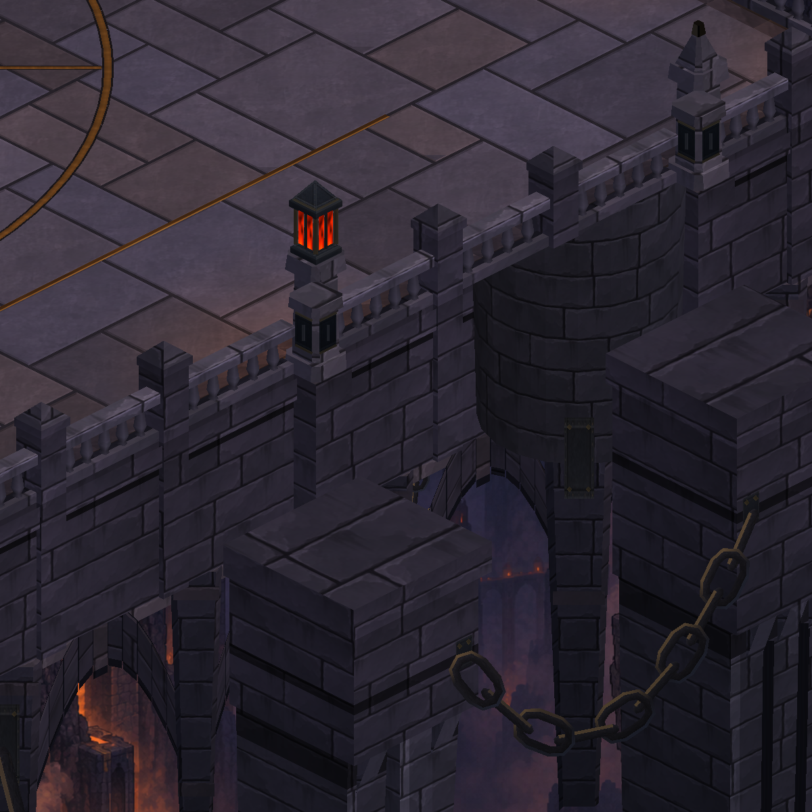
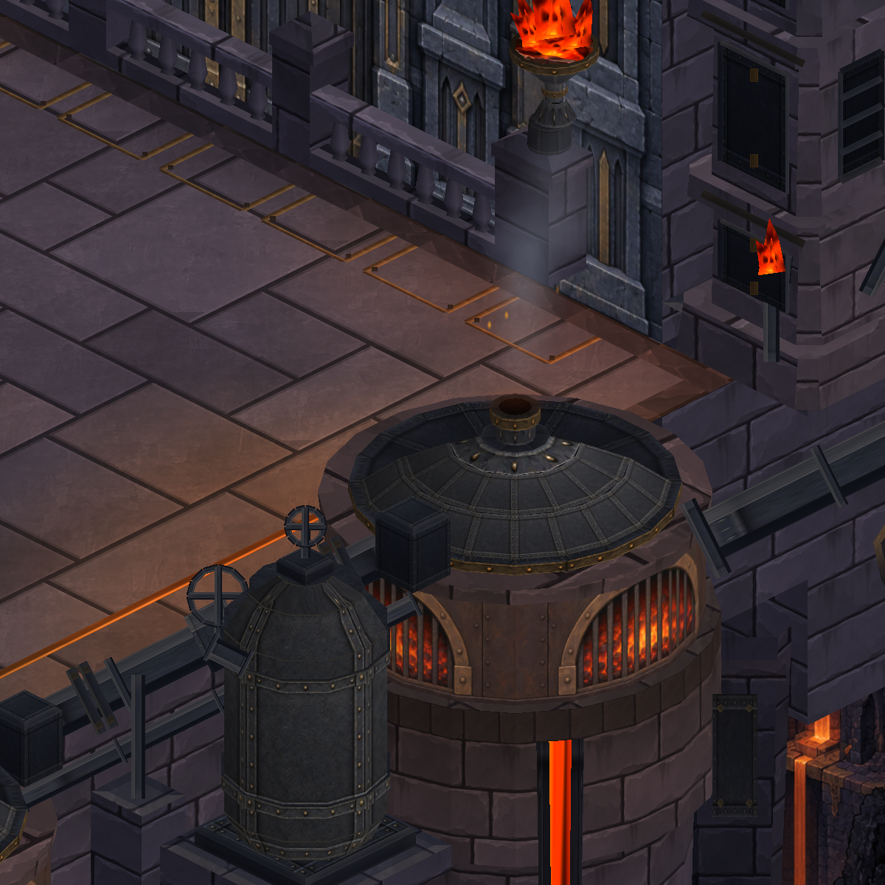
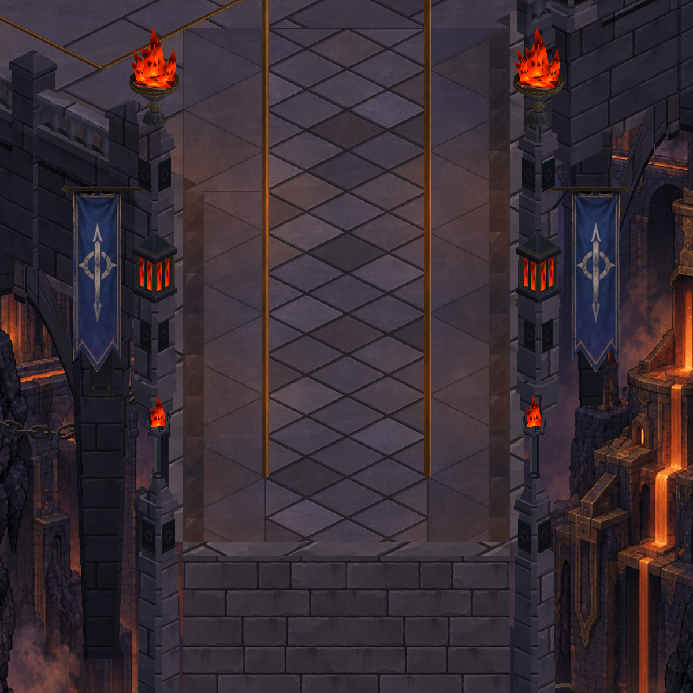
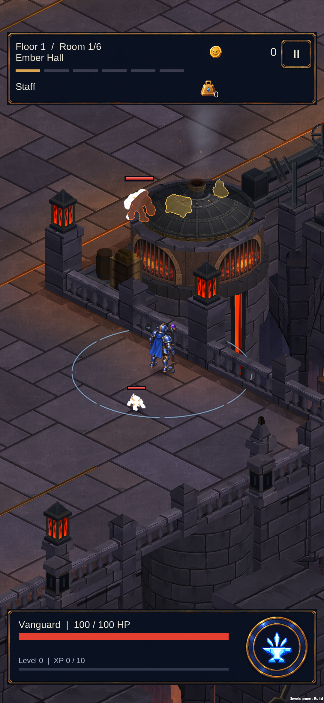
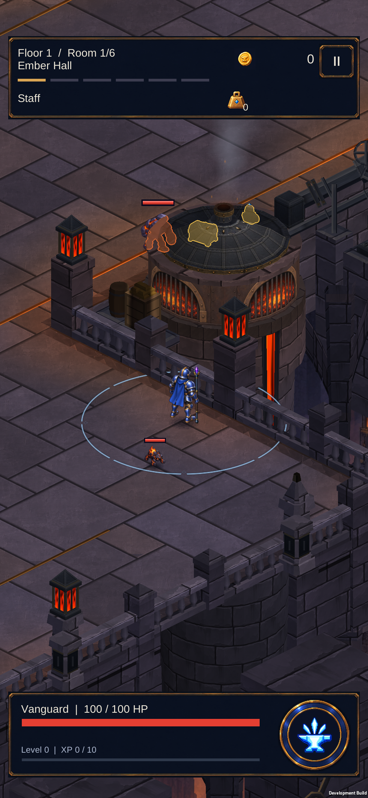
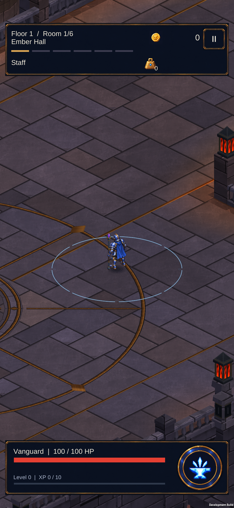

Dökümhane — yüzey, is ve yerel ışık
Gerçek Unity görüntüleri: solda boyalı doku paketi, sağda yeni yüzey işlemesi. Saçak altı gölgeleri, yüksekliğe bağlı ateş ışığı, kapak isi ve aşınmış taş kenarları.
Doğrulama ve cihaz durumu
overview — önce / sonra


gate-detail — önce / sonra


shaft-detail — önce / sonra
undercroft-detail — önce / sonra


furnace-detail — önce / sonra


bridge-detail — önce / sonra


point-2 — önce / sonra
Telefonda aynı açı — önce / sonra
S23: 59,9 FPS; GPU önce 3,7 ms, sonra 3,7–3,8 ms. Sabit inceleme sahnesi; karakterlerin anlık parlamaları kareler arasında değişebilir.


Kısa hareket kontrolü
